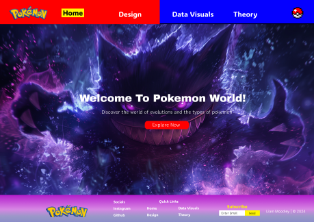
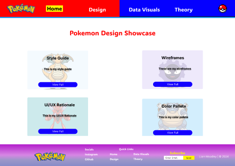
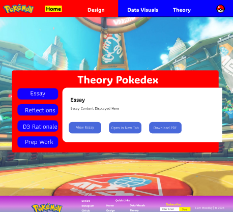
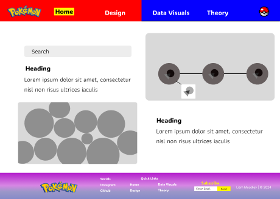

Pokémon Wireframes & Rationals

Low Fidelity Wireframes
Wireframe 1
Navigation Structure:
- The top navigation bar is straightforward, with highlighted sections ("Home," "Design," "Data Visuals," "Theory") guiding users through different aspects of the site.
- Yellow highlights draw attention and indicate the current selection, enhancing user orientation.
Footer Structure:
- The footer contains quick links and social media connections, providing easy access to other parts of the website.

Wireframe 2
Grid Layout for Clarity:
- The grid layout organizes the wireframes and style guides systematically, making it easy for users to browse through the designs.
Interactive Buttons:
- Blue buttons below each design thumbnail offer clear calls to action, allowing users to view the full wireframe or style guide.

Wireframe 3
Visual Comparison Layout:
- The page is divided into distinct sections for different types of data visualization, allowing easy comparison side-by-side.
- Interactive elements encourage user engagement, allowing personalized exploration of Pokémon data.

Wireframe 4
Focused Content Presentation:
- The layout focuses user attention on one topic at a time, with a large central area for detailed content.
Intuitive Navigation System:
- The left sidebar offers clear navigation within the Theory section, allowing quick topic switching.
Progressive Disclosure:
- The design shows one theory at a time, avoiding information overload.

Wireframe 5
Scalable Content Area:
- The expanded content area allows for detailed theoretical content without compromising readability.
Consistent Navigation:
- The left sidebar remains constant, aiding in easy topic switching.

High Fidelity Wireframes
Color Theory
- Consistent Brand Identity: The use of Pokémon red for headers maintains strong brand recognition.
- Complementary Color Scheme: Red and blue create contrast, drawing attention to important navigation elements.
- Purple Accents: Used on the home and design pages for depth and visual interest.

Clear Navigation
- The top navigation bar allows easy movement between site sections.
- Hierarchical Information Architecture: Provides structured page access.
- Progressive Disclosure: Each page reveals more information as users explore deeper.
- Interactive Elements: Buttons like "View Full" encourage engagement.
- Search Functionality: A search bar on the Data Visuals page aids quick information retrieval.

Accessibility
- High contrast between text and backgrounds enhances readability.
- Consistent layout helps users build a mental model of the site structure.
Engagement
- Pages offer multiple interaction points, encouraging exploration.
Scalability
- Designs allow easy addition of new content within the established structure.

Data Visuals
- Implied interactive charts for user exploration.
- A search bar for specific data points or Pokémon.